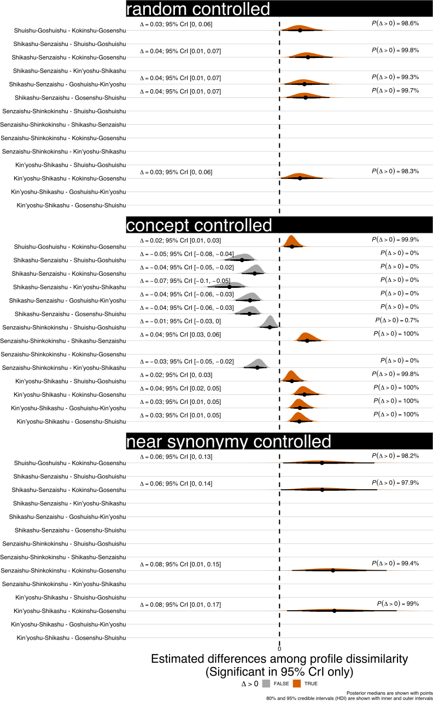
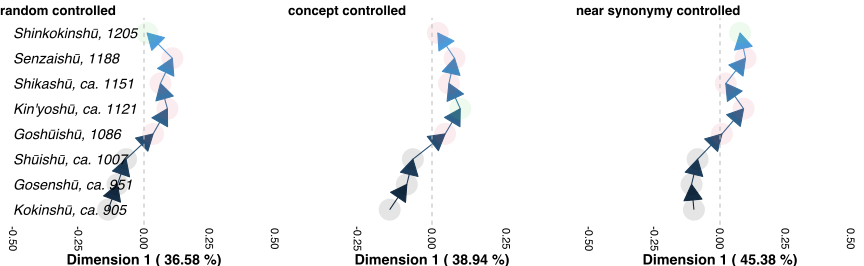

語彙プロファイルに見られる八代集の語彙変化
1. はじめに
本研究の目的は，古典日本語の語彙分析において，全語彙によるマクロレベルの調査に代わり，関連語群の部分語彙サンプルを用いた調査手法を八代集（古今・後撰・拾遺・後拾遺・金葉・詞花・千載・新古今）の語彙変化に適用することである．この方法に関して関連研究と関連理論を整理し，語彙変化の研究が蓄積している八代集のテキストデータを分析する．
複数の言語変種間の語彙変異・変化は，それぞれの変種の全語彙の差集合で検討することの古典語における有効性が指摘されている(築島, 1992; 近藤, 2011)．一方，語彙の変化・変異の比較手法には，以下の3点の拡張が可能であると考える．第一に，語の推敲など様式の側面と，テーマ・トピックなど内容の側面が混在し，両者を分離して調べられていない．第二に，「変種 \(A\) の話者はみな \(X\) を言い変種 \(B\) ではまったく言わない」といった表現 \(X\) よりも，「変種 \(A\)の話者は \(Y\) を多用し変種 \(B\) はあまり使わない」といった数量的差異のある表現 \(Y\) が一般的だ (Wolfram, 2004) が，集合差ではこうした \(Y\)が拾えない．第三に，集合差分では語の消滅・出現のみ把握できるものの，その消長を用いた語彙差（語彙変化）の数量化は十分に検討されていない．そこで，2点の調整を考える．第一に，語彙差の調査では形式と内容のいずれかを統制し，片方を分析する方法を開発する．第二に，集合の差による分析に代わり，語彙における語の確率分布の差を利用し，語彙変化を測定する方法を検討する．
第一の調整については，日本語学で既に実践例がある．文献 (宮島, 1979; 蓮見, 1991) は，同一作品の複数バージョンに注目して，語彙・語の変化を検討した．文献 (田中 and 山元, 2014; 北崎, 2024) は，パラレルテキストで語の対応づけを行い，内容の差を捨象したうえで対応づけをもつ言語要素の間の言語変化を調べた1．これらの研究は，内容の統制としてパラレルコーパス相当の資料を利用しているが，パラレルコーパスは語彙史の資料としてごく限られ，特定資料への依存を避ける方法論も求められる．たとえば，本稿の和歌資料では異本こそあるが，同一作品の異なる変種は存在しない．また，既存研究の多くは特定変種の特徴的な表現や語彙交替を事例として記述するにとどまり，交替しうる語の選好を数量化する，すなわち第二の調整の趣旨は十分に扱われていない．
このように，この第二の調整は古典語の語彙論の応用可能な領域の文体・位相の研究におよぶが，日本語の研究では語彙論での実践が少ない2．対して，計量方言学は，交替しうる表現の分布を用いて変種間の違いを定量的に測定し言語変種の分類に貢献する方法論が充実している．そこで，それらを参考としつつ，勅撰和歌集の代表である八代集における変遷について，語彙を用いた計量分析を検討する．
本稿が扱う八代集は，成立年がおおむね300年の範囲で均一なため，平安期の貴族社会が好んだ言語の変遷を見る手がかりとなる．表現論と語彙論では，その変遷が多く議論されてきたが，「形式・内容」を切り離して語彙変化を検討する方法論はまだ確立されていない．そこで本稿では，方法論的に形式的変化と内容的変化の 2 視座を調整する手法として，語彙変種計量論 (lexicallectometry) (Speelman et al., 2003) に基づく拡張（2.3後述）を提案する．八代集を広義に時期別の「変種」とみなし，その変化量を測定して従来の研究の知見と照合する．さらに，視座の調整による結果の変化の有無と，変化があった場合の規則性も検討する．
2. 先行研究
本稿ではまず八代集の言語変化と転換点を説明し，方法論の前提として，形式的変化と内容的変化の視座調整の理論的背景と日本語語彙論の研究手法に基づく拡張可能性を先行研究に照らして整理する．
2.1. 八代集の言語変化
八代集は，『古今和歌集』（905年頃）から『新古今和歌集』（1205年）までを含む8つの勅撰和歌集であり，同一の題材かつ成立年が比較的等間隔なため，時期ごとのスナップとして和歌語彙の通時的分析に適した資料である．和歌の言語研究では，語形の選好の交替とテーマの流行が混在し，両者の境界が曖昧である．文芸研究としては，和歌の詠まれる情景 (上野, 1976)，流行 (川村, 1991)，歌語辞典としては「桜」「梅」など歌語間の共出現 (片桐, 1983) が指摘されている．八代集の表現の転換点としては，『拾遺和歌集』（拾遺）から『後拾遺和歌集』（後拾遺）への移行が，「褻」（私的・日常的）から「晴」（儀礼的・公式的）への転換として言及されている(上野, 1976; 川村, 1991)．
一方，前述脚注でも言及したとおり，語彙を視座に歌語の変化を調査した研究では，語彙そのものではなく，語彙の各種品詞の比率や修飾語対動詞比率などの語彙指標を利用する傾向がみられる(波多野, 1941; 西端, 1992; 辻, 1998)．本稿の趣旨である，語の言い換えなどの特定の語群内の選好を視座とした数量化は確認されていない．また，計算文学研究として，文芸研究での八代集の転換点と，言語学（語彙論）としての八代集の転換点を包括的に計算する架橋となる方法論的枠組みが期待される．
2.2. 語彙変化分析における意味論的統制
前述の語彙論における「内容の統制」について述べる．日本語の語彙の研究では，コーパスの内容面の干渉を捨象しようとする考えは文献 (宮島, 1979)ですでに実践されている．一方，後述する「語彙的変種計量論 (lexical lectometry)」の枠組み (Speelman et al., 2003; De Pascale, 2019; Geeraerts et al., 2023) では，「意味論的統制(semantic control)」として理論と方法を体系的に整理している．その系統を踏まえ，日本語語史・語彙史の分析視座を改めて概観する．
2.2.1. 意味変化と命名変化の区分の明確化
言語変異の研究対象について，onomasiological variation とsemasiological variation の二分が(Geeraerts et al., 1994)で提唱されている．onomasiological variation は同じ意味を表す表現の変異（命名の変化）であり，semasiological variation は同じ表現の指す意味の変異（意味の変化）である(Geeraerts et al., 1994)．
前者「意味の変化」には，語史研究による精緻な分析，計量的手法の開発と応用など，多様な分析が展開されている(相田 et al., 2023; 髙橋 et al., 2025)．後者「命名の変化」には，同語の異表記の選好変化として論じられる場合が多い (間淵, 2016; 髙橋, 2016; 髙橋, 2019)．後述にとりあげる．また，類義語同士の交替でも，最終的には意味分担の相違と使い分けに焦点が置かれる3．このように，命名変化には常に意味変化の要素が絡むと考えられる．
一方で，日本語の語彙の集合・体系としての変化では，(1) 語彙の集合全体・部分集合の各要素の消滅・出現と(2) その集合がもつ数量的特徴4の2点が主な分析対象となりやすい．この場合，語史のように命名変化・意味変化を区別する必要はない．文体や時期，ジェンダなどによる語彙差を論じる際も，数量的指標を利用することが多い（(近藤, 2018)など）．他方，方言地理学では同義の語形分布を用いる計量方言学の研究があり，同概念異語形の分布で方言間の距離を計算する方法が多用されている．これらの手法にならい，語史・語彙史で検討した使い分けうる類語群・関連語群を用いて語彙の違いを測る手法が語彙史でも考えられる．その考えは，八代集の各時期にみられる語彙表現の差を分析するうえで示唆となる．
2.2.2. 語彙的変種計量論
計量方言学の手法をより一般化した方法論として「変種計量論 (lectometry)」の枠組みが提案されている．時期ごとの言語変化は地域方言とは異なり，狭義の言語「変種」や日本語学でいう「位相」としては扱えないが，変種計量論ではそのような時期差も「変種」の1つとして考慮される(Geeraerts et al., 2023)．
「変種計量論」は，複数の言語変数5を収集し，それらを定量的に分析して言語変種間の距離を測定する方法論群である(Ruette et al., 2014)．言語表現の要素の1つである語彙を用いた「語彙的変種計量論(lexical lectometry)」はその下位区分に位置し，本稿では主にこの語彙的変種計量論の枠組みを採用する．
語彙的変種計量論では，意味論的統制として語彙変数（言い換えうる語形の群）を利用している．1つの語彙変数に属す言い換えの2変種間の使用度数・率の差で2変種の変化量を計算し，内容による変化量を変化量全体から取り除く（3.2.1にて後述）．こうして得られた変化量を複数の語彙変数で統合すれば，2変種の全体的な語彙差が算出できる．この測定手法は，日本語の語彙論・語彙史ではまだ実践されていない．
2.2.3. 2種類の語彙変数の認定アプローチ
上記「語彙変数」，または言い換えうる語形の群の認定は完全に客観にはなりえない．本来，変異理論の「変数」概念では，変数内の語形はあらゆる条件で互換でき，命題として真値が同値である必要がある．しかし，語彙レベルでその厳格な同義判定を行うのは難しく(Lavandera, 1978)，結果として語彙変異は音韻などに比べ，変異理論の分析の周縁に置かれがちであった(De Pascale, 2019)．
変種計量論では，このような語形たちの真理条件レベルでの同値を「形式的同値 (formal equivalence)」とし，それよりルーズな同値である「概念的同値(conceptual equivalence)」を提起している(De Pascale, 2019; Geeraerts et al., 2023)．概念的同値とは，同一のデノテーションを異なる概念として語彙化した2語の間の同義のことである．たとえば，同じズボンについて， breeches とでも pants とでも言えるため，形式的同値ではない2語は，概念的同値にあたりうる(De Pascale, 2019; Geeraerts et al., 2023)6．
その結果，[ trouser = pants ] のような形式的同値の語彙変数のみならず，半ズボンとして [ breeches = trouser = pants ] のような概念的同値の語形たちも語彙変数であると捉えられる．さらに，概念的同値にある変異形の選好は，異なる変種の話者が行う言語化，とくに認知面の概念のカテゴリ化の根拠として成立するとされる(De Pascale, 2019)．
本稿の文脈では，こうした 2 種類の同値による語彙変数の規定は，意味統制として 2 段階での調整を可能にし，異なる観点で語彙差を観測可能にしたと考える．
2.3. 語彙変化の統制の拡張の可能性
上述した語彙変化・変異の統制は語彙変種計量論の枠組みに基づくが，他方で日本語の語彙論的研究を踏まえれば，前掲の2段階に加えて統制の水準をさらに拡張しうる可能性がある．具体的には，全体的な語彙変化を対象とする代わりに，部分語彙を取り出して詳しく検討する手法がすでに事例として報告されている7．
2.3.1. 上位概念での語群比較：意味分野別構造分析法
意味分野別構造分析法 (田島, 2000) は，語彙の意味分野を単位に部分語彙を区分し，その比較を行う手法である．たとえば，親族呼称や色彩表現などの意味分野ごとに2変種を比べ，片方にのみ含まれる語を意味分野レベルで特定できる．意味分野（上位概念）は語彙変数に当たらないが，意味の近さを粗く統制する点で類似すると考えられる．一方，2変種の語を直接比較する代わりに意味分野で整理すれば，一定の統制をかけつつ詳細な差を捉えやすくなる．
2.3.2. 同語異表記群の比較：表記の変遷研究
2.3.3. まとめ：意味統制の水準の多段階化
語彙変化の特定側面を見るための統制は，ここまでに形式的同値から概念的同値の2段階を取り上げたが，日本語語彙研究では，同語異表記と意味分野の調査手法を参考に，以下のように多段階化できる9：
統制なし → 意味分野統制 → 概念的同値語群統制 → 形式的同値語群統制 → 同語異表記群統制 → 同義トークン異表記統制
本稿では，データの制約上「ランダム語群 → 同概念語群 → 類義同義語群」に簡略化し，この軸に沿って八代集各時期の語彙を部分語彙に分け，サンプルの分布差を用いた計算で分析する．こうすることで，用語の選択の変化をテーマの選択から段階的に濾過できると想定される．最終的に，方法論的見解として，八代集の語彙変化の見え方がこの統制水準によって異なるか，異なる場合その違いが連続的か離散的かを明らかにする．
3. 方法
3.1. 材料
3.1.1. 八代集語彙データセット
本研究では八代集語彙データセット (Hodošček and Yamamoto, 2022)を使用した．このデータセットは，新編国歌大観 CD-ROM 版の二十一代集データ(新編国歌大観編集委員会, 1996) を基に，新日本古典文学大系本二十一代集の書籍を参照して正規化と単位分割を行った．作者と歌番号は資料(中村 et al., 1999) 所収の作者タグを利用し，各単語には国立国語研究所の分類語彙表 (中野 et al., 1994) に準じた分類番号を付与した．八代集の分類語彙表の詳細は次節で述べる．
3.1.2. 分類語彙表
八代集データセットにおける八代集用の語彙分類番号の階層を用いることで，「ランダム語群」「同概念語群」「類義同義語群」の語群をサンプリングする．
分類語彙表番号は，国立国語研究所によって編纂された日本語の大規模なシソーラスであり，階層的な意味カテゴリを伴うエントリが収録されている(Asahara et al., 2022)．本稿で用いる分類は，現行の分類語彙表番号の旧版(中野 et al., 1994) に準じており，和歌に特有で現代語には存在しないカテゴリを追加し，同語の異表記を細かく分類する拡張も行った．分類番号は，たとえば，語彙項目「昨年」の分類番号が 1.1642 である．先頭の 1 は体言を意味し，その下位に 1.1 （部門：関係）， 1.16 （中項目：時間）， 1.1642 （分類項目：過去）が意味の階層によって分類されている．
3.2. 手続き
語彙変化を測定するには，語彙的変種計量論の初期手法であるプロファイル基盤分析 (Speelman et al., 2003) が提示するプロファイルの非類似度を用い，各歌集の語彙的選好の差を数値化する．さらにクラスタリング分析と統計モデリングにより，通時的変遷の転換点（差の最も大きい隣接歌集）を調べる．本稿でのプロファイルの概念の拡張，その非類似度の計算，そしてサンプリング手法を述べる．
3.2.1. プロファイルと変化量の計算
プロファイル基盤分析における「プロファイル」とは，語彙変数の下位語形と変種とのクロス表で，各変種における同義・類義語形の使用頻度・率を示す（1）．本稿では，語彙変数をさらに一般化し，3水準の意味の類似度をもつ語群を用いてプロファイルを作成する．
| 後拾遺以前 | 後拾遺以降 | |
|---|---|---|
| ムグラ | 100% | 62.5% |
| ヤヘムグラ | 0% | 37.5% |
プロファイル非類似度は，その語群に限定した変種間の変化量を示す値である．計算手法は文献 (Speelman et al., 2003)に準拠し，変種をベクトル，語形の相対頻度を各変種ベクトルの次元として扱い，2者の1ノルムの距離を求める．たとえば，「ムグラ・ヤヘムグラ」プロファイルでは，後拾遺以前（1.00,0.00）と後拾遺以降（0.625,0.375）の距離は \(|1.00 - 0.625|+|0.00-0.375|=0.75\)となる．さらに，変化量の有意性は絶対頻度での対数尤度検定で判定し，有意でない場合変化量を0と見做す．
2変種の全般の語彙差は複数のプロファイル非類似度を統合して計算される．複数の類似度を統合する方法としては，平均，もしくは，重みづけ平均があげられる10．本稿では単純平均を用いる．すなわち，\(n\) 個のプロファイルで計算されたプロファイル非類似度 \(d_1, d_2, \ldots, d_n\) を用い，全体の語彙差を\(D=\frac{1}{n} \sum_{i=1}^{n} d_i\) とする．
3.2.2. 3 水準の語群のサンプリング
| 水準 | 説明 | サンプリング基準 | 例 | サンプル数 |
|---|---|---|---|---|
| ランダム群 | 意味的統制なし | 分類番号分類項目不一致 | {花橘, 雁} | 196 |
| 同上位概念群 | 広義の意味分野共有（例：「植物」語彙） | 分類番号分類項目一致 | {花橘, 稲, 桜花} | 928 |
| 類義・同義語群 | 狭義の概念共有（例：「植物-葎」語彙） | 分類番号同語判定＋目視選別 | {葎, 八重葎} | 43 |
前述のように，本稿では意味統制の水準を3段階に拡張した．これら3水準に対応する語群を用いてプロファイルのサンプルを生成し，変化量を計算する．
サンプルリングは，3.1.2 で説明した分類語彙表番号を基に実施する（2）11．研究(Speelman et al., 2003) では，概念的同値に基づく語群は2～3個の語形からなる例が多い．また，八代集の語彙中で類義・同義語群のサイズも基本的に2～5個に収まる．これらに合わせ，ランダム水準と同概念水準の語群のサンプルも2～5個の語形を含めるように設定した．ランダム水準の語群は，対象となる30の意味分野12の全語彙から，サイズが2～5の非同概念の語形の群をそれぞれのサイズで50回ずつ無作為抽出（非復元抽出）し，合計で200イテレーションを実施した．同概念語群は，対象の30の意味分野ごとにサイズ2～5個の同概念の語形の群をそれぞれのサイズで30回ずつ無作為抽出（非復元抽出）した．同義類義語群は分類番号を参考に目視で全数抽出した．最終的にランダム群196サンプル，同概念語群928サンプル，同義類義語群43サンプルを得て，これらを変化量の計算と分析に用いる．
3.2.3. 変化量の分析
- 統計モデリング - 変化量最大の隣接2歌集：
それぞれの意味統制の水準で変化量が最大となる隣接2歌集の有無と相違を調べるために，語群サンプルの変化量（プロファイル非類似度）をハードル対数正規回帰モデル13 で分析する．モデルでは，固定効果として隣接する勅撰集の組 (
phase)14 と意味統制の水準，さらに二者の交互作用（phase\(\times\) 統制水準）を含める．サンプルとなる語群のサイズも統制変数として，固定効果に組み込む．ランダム効果項（ランダム切片）として語群の属する意味分野 (profile) と語群のサンプル ID を設定する．最終的に，各統制水準ごとにphaseのレベル間のコントラスト（隣接ペア間の差）を事後分布からサンプリングし，変化が特に大きいphaseの有無と3水準での違いを検討する． - クラスタ分析 - 八代集語彙の分類：
上記統計モデリングはサンプルごとの変化量を用いた．次に研究(Speelman et al., 2003) を踏襲し，サンプルの非類似度の平均を求めて大局的な語彙変化量を算出し分析する．八代集の語彙の分断を分類問題と見做し，クラスタ数を3と仮定し，非類似度行列を基にk-means法でクラスタリングを行う．最後に，3水準で見る八代集の語彙の分類の相違を確認する．
- 多次元尺度構成法 - 語彙の揺れのパターンの可視化：
最後に，上記の大局的な語彙変化量の行列を基に多次元尺度構成法(Kruskal, 1964) を実施し，第1主軸に八つの勅撰集の語彙の相対的位置づけを\(x\)軸に，成立年順に\(y\)軸へ等間隔に配置して，可視化する．さらに，上記2つの分析と同様に，3水準での相違を検討する．
4. 結果
4.1. 変化量最大の隣接 2 歌集
隣接 2 歌集は統計モデルでは phase と呼び，八代集には計 7 つの phase がある．各統制水準を通じ，それらの phase のうち他のすべての phase より変化量が大きい例は存在しなかった．
具体的に，各統制水準での phase の変化量の差は 1 で確認できる．同図では，ランダム・同概念・同義類義の3水準における phase の変化量の比較のうち，95% の信用区間(CrI)で有意に 0 とならない比較のみを提示している．すべての phase のレベル間コントラクト（計 21 対）のうち，ランダム水準は 5 対，同概念水準は 14 対，同義類義水準は 4 対に差が確認された．
それぞれの水準で共通した変化量の差としては，「拾遺→後拾遺」より「古今→後撰」が小さい（ランダム水準：Median=0.003，95% CrI [0, 0.06]；同概念水準：Median=0.002，95% CrI [0.01, 0.03]；同義類義水準：Median=0.006，95% CrI [0, 0.13]）ことと，「金葉→詞花」より「古今→後撰」が小さい（ランダム水準：Median=0.003，95% CrI [0, 0.06]；同概念水準：Median=0.004，95% CrI [0.02, 0.05]；同義類義水準：Median=0.008，95% CrI [0.01, 0.17]）こと，2点あった． phase 間の変化量の差はすべて 0.1 未満だった．それ以外では3 において「詞花→千載」に正の効果が確認された（Median=0.212，95% CrI [0.07, 0.35]）15．また，サンプルの語群サイズには変化量への正の効果が見られた（3）．
4.2. 八代集の分類
非類似度の平均をもとに計算した２つずつの和歌集のグローバルな語彙差の行列でクラスタリングした結果を示す（2）．
ランダム水準では，「古今・後撰・拾遺」「後拾遺・金葉・詞花・千載」「新古今」の３クラスタに分類された．同義類義水準は，ランダム水準と同様な分類であった．
中間水準である同概念水準では，「古今・後撰・拾遺」「後拾遺・詞花・千載・新古今」「金葉」の３クラスタに分類された．他の２水準とは，「金葉」「新古今」の扱いに相違があった．
4.3. 語彙の揺れのパターンの可視化
多次元尺度構成法で語彙差の行列を可視化し，第1主成分軸を \(x\) 軸，成立年順を \(y\) 軸に配置した（2）．その結果，3 水準で類似した傾向がみられ，「古今→後撰→拾遺→後拾遺→金葉」は負から正へ移行し，「拾遺→後拾遺」で0値を切り，「金葉→詞花→千載→新古今」は負方向と正方向を往復するパターンを示した．

Figure 1: 異なる統制の水準に基づく phase 変化量のコンストラクト．それぞれの有意差の事後分布の中央値と95%の信用区間 (CrI) を \(\Delta =\) [<Median>, 95% CrI [<lower.CrI>, <upper.CrI>] で提示した．差が 0 より大きい確率は \(P(\Delta > 0) =\) <possibility> で提示した．

Figure 2: 多次元尺度構成法とクラスタリングによる第1主成分の可視化．矢印は成立年順を示す．色はクラスタを示す．クラスタリングにより三代集である古今・後撰・拾遺，および詞花・千載が安定のクラスタを形成する一方，金葉と新古今の位置は水準により変動する．\(x\) 軸での変動パターンは，「古今→後撰→拾遺→後拾遺→金葉」は負から正値へと移行し，「拾遺→後拾遺」で0値を切る．「金葉→詞花→千載→新古今」は，負方向と正方向の方向転換の繰り返しを示す．
| 係数 | 推定値 | 95% CrI |
|---|---|---|
| \(\alpha_{\mu}\) | -2.472 | [-2.596, -2.342] |
| \(\alpha_{\text{hu}}\) | -5.043 | [-5.843, -4.460] |
| \(\beta_{\text{size}}\) | 0.139 | [0.122, 0.156] |
| \(\beta_{\text{concept controlled}}\) | -0.055 | [-0.261, 0.141] |
| \(\beta_{\text{near synonymy controlled}}\) | -0.252 | [-0.578, 0.072] |
| \(\beta_{\text{Gosenshu--Shuishu}}\) | 0.020 | [-0.119, 0.158] |
| \(\beta_{\text{Shuishu--Goshuishu}}\) | 0.158 | [0.019, 0.296] |
| \(\beta_{\text{Goshuishu--Kin'yoshu}}\) | 0.029 | [-0.114, 0.169] |
| \(\beta_{\text{Kin'yoshu--Shikashu}}\) | 0.156 | [0.013, 0.297] |
| \(\beta_{\text{Shikashu--Senzaishu}}\) | 0.212 | [0.073, 0.352] |
| \(\beta_{\text{Senzaishu--Shinkokinshu}}\) | 0.134 | [-0.006, 0.275] |
| \(\sigma\) | 0.702 | [0.692, 0.714] |
| \(\sigma_{\text{profile}}\) | 0.358 | [0.310, 0.412] |
| \(\sigma_{\text{hu profile}}\) | 1.342 | [0.950, 1.907] |
| 観測数 | 8145 | |
| \(R^2\) | 0.222 | |
| 周辺 \(R^2\) | 0.094 |
5. 考察
5.1. 3水準における八代集の語彙変化の同調
統計モデリングの結果 (4.1) では，最大の変化を示す隣接2歌集は見られなかったが，「古今→後撰」の語彙変化は小さく，「拾遺→後拾遺」「金葉→詞花」「詞花→千載」の語彙変化は大きかった．このことは「後拾遺」を境目とする初期の安定性と後期の変動性を支持した．ただし，いずれも転換点といえるほどの大きな変化ではなく，漸進的と見做すべきである．
クラスタ分析 (4.2) では，連続した勅撰集が1つのクラスタになりやすい結果から勅撰集の変化の連続性が推測される．同概念水準とその他2水準との比較では金葉と新古今のクラスタの扱いに違いがみられたことは，可視化の結果 (4.3) の原理と関連していると考えられる．そのため，次にまとめてとりあげる．
可視化の結果（4.3）では，三代集の「古今→後撰→拾遺」が比較的安定していた一方，後拾遺以降は軸の正負が転換した．先行研究が示す「褻」から「晴」への体裁変化 (上野, 1976) とは整合するが，同義類義水準の語形選択にも転換が見られる点は注目に値する．同義類義水準での変化は「褻→晴」として単純に解釈しがたく，さらなる検討が必要である．また，金葉まで負軸から正軸への連続的推移があったが，金葉から詞花への転換は成立年が近いにもかかわらず軸の正負が初めて反転した．これは金葉の撰者が同時代の歌人を多く採録するのに対し，詞花が後拾遺の歌人の作を多く収録したこと (松田, 1939) と関連し，詞花の後拾遺寄りへの回帰を示唆すると考えられる．さらに，「金葉→詞花→千載→新古今」は正の値の範囲内で揺れを示し，(1) 同時代重視から旧時代志向への回帰，(2) 再び同時代志向への転換，(3) 最終的に新古今集における古歌を取り入れる本歌取り16 の隆盛，といった新古の選好交替を反映している可能性がある．
全体的には，本稿で設定した3水準の結果はいずれも近似しており，中間的水準である同概念水準だけが異なる傾向を示した．文学史の記述とも整合するが，本稿の分析手続き（語彙のサンプル調査）と文学史的事実が必ずしも対応しているわけではなく，偶然は排除できない．しかし，言語学的分析手法の計算文学研究への応用可能性（主に数量的裏づけ）を示す予備的結果といえる．この水準間の分析結果の同調については，次節で詳述する．
5.2. 語彙分析における意味統制の水準
統計モデリングの結果 (4.1) によると，統制水準が異なっても大きな変化はなかった．これは，八代集は「部立」などに規定されている共通のテーマをもとに編纂され，テーマ差による変化が本来小さく，内容の統制を行っても結果は変わりにくいためかもしれない．別資料での再検証が必要である．一方，同概念水準でのみ変化量の有効なコントラクトが多くみられた理由としては，次のように考えられる．同概念水準のサンプル語群は，部立など共通上位概念内の語形で構成される場合が多く，テーマ内で語彙選択の変化を計算する傾向がある．このようにテーマ別に絞ることで，全体では目立たない時代差が顕著になりやすい．この論理では，同義類義水準の類語選択は八代集を通じて安定的といえる．
中間の同概念統制水準の結果は他の2水準とやや異なったため，語群サンプリング時の統制水準をルーズから厳格へ段階的に変えても，語彙変化が一方向に連続的に見えやすく・見えにくくなることはなかった．このように意味内容面の統制は，その影響が連続量的に振る舞わず，語彙変化の視座を離散的なものとして切り替える操作に近いといえる．
6. 結論
本稿は，八代集の語彙変化を分析するために，語彙的変種計量論の分析手法(Speelman et al., 2003) を基に，意味統制の水準を拡張し日本語学の語彙論の観点を切り替える手法を八代集の語彙に適用した．具体的には，無関係語群・同概念語群・類義同義語群の低・中・高の意味統制の3水準を設け，八代集の各歌集でそれらのサンプル語群を収集し，語群内の語形分布の非類似度を計算した．この変化量を用いた分析から，(1) 変化最大の隣接2歌集，(2) 時代区分，(3) 推移揺れパターンを検討した．その結果，低・高の水準は類似し，中間水準のみがやや異なった．プロファイルでの意味統制は視座の切り替えに近く，語彙変化の各の側面を強調する役割を分担していると考える．なお，文学史的事実とおおむね整合したことから，プロファイル基盤分析が文学研究の裏づけに活用できよう．
Footnotes:
各種品詞の比例，語種率，タイプ/トークン率など．
言語変数は，同一の内容を意味する表現群を指す(Labov, 1972)．
踵の上までの長ズボンか，膝を覆う程度の半ズボンか明確にできない場面が現実には多く存在する．
ただし，同語であっても，表記ごとに表意機能が異なり，使用者に別語意識をもつ場合もある．その使い分けは，研究(髙橋 et al., 2025) などでも議論されている．同一の語形の多義性は，今後の課題とする．
この拡張はあくまでも変種計量論の枠組みを日本語語彙研究に適用する試みであり，その枠組みの本来もつ認知社会言語学的意図とは必ずしも合致しない点に留意されたい．
重みづけの方法については研究 (Ruette et al., 2014) がプロファイルの重要度，内的整合性などに基づく計算方法を詳しくとりあげている．
分類番号づけの自動化，分類番号に依存しない水準分けは今後の課題にしたい．
各和歌集において異なり語数が2以上存在し，かつ語群全体で延べ語数が1以上になるように選んだ．この基準は，データセットを8つの時代のサブセットに分けて8つの時代の変化を調べる際に，時代ごとの異なり語数が1か0かになるような意味分野を避けるために考えた．
語群サンプルのプロファイル非類似度の分布は対数正規分布に従うと観測されているが，対数正規分布に含みえない0値データも含まれている．このような分布にはハードル対数正規分布を適用する(Chaudhry and Heiss, 2018)．統計分析にあたり，R 言語（4.2.1;(R Core Team, 2022)）， brms （2.20.4），stan(cmdstanr)（2.36.0）と cmdstanr （0.8.1）を用い，モデルについては，事前分布をデフォルトのままとし，MCMC (Hamiltonian Monte Carlo) を用いた．4本のチェーンと各チェーン4000ステップ（うち1000ステップはウォームアップ）でサンプリングを行っている．\(\hat{R}\) はすべて1.00程度で，事後分布の有効標本サイズのBulk部とTail部も十分な値を示した．
たとえば，「古今→後撰」「拾遺→後拾遺」「千載→新古今」など，7つの組がある．
モデルでは「古今→後撰」を比較の基準として効果を変換していないestimatesであることに留意されたい．
古歌の一部を新たな歌に取り入れる技法．